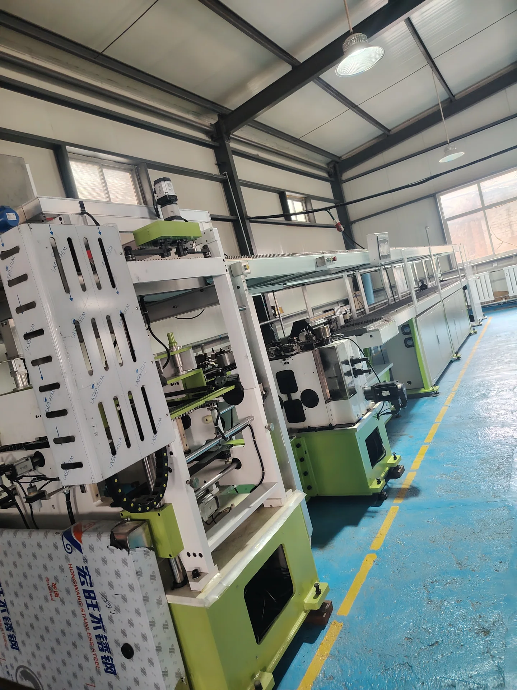
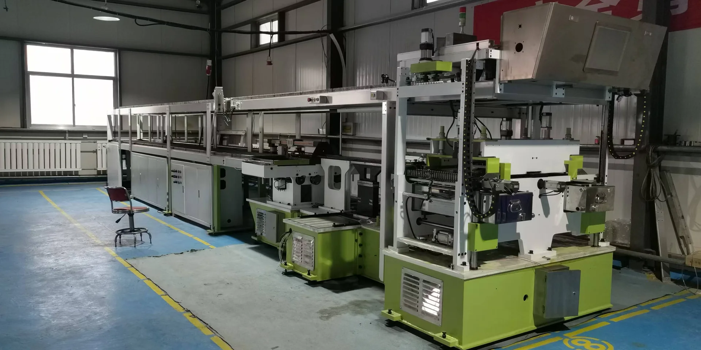
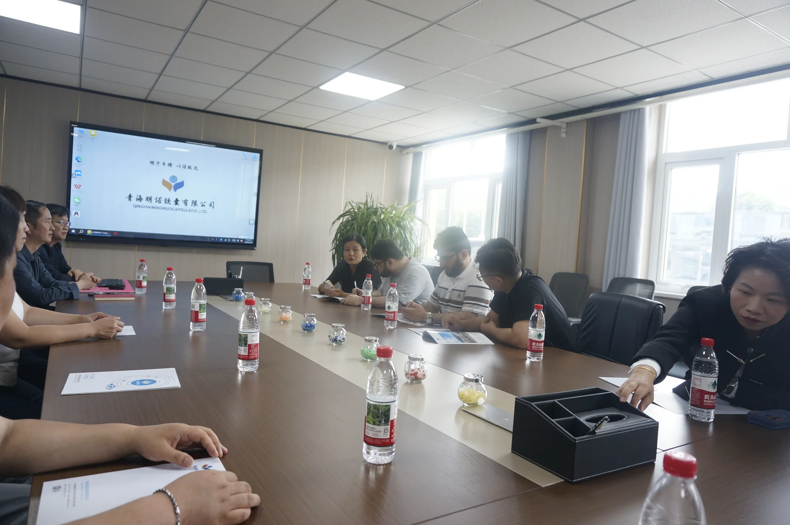
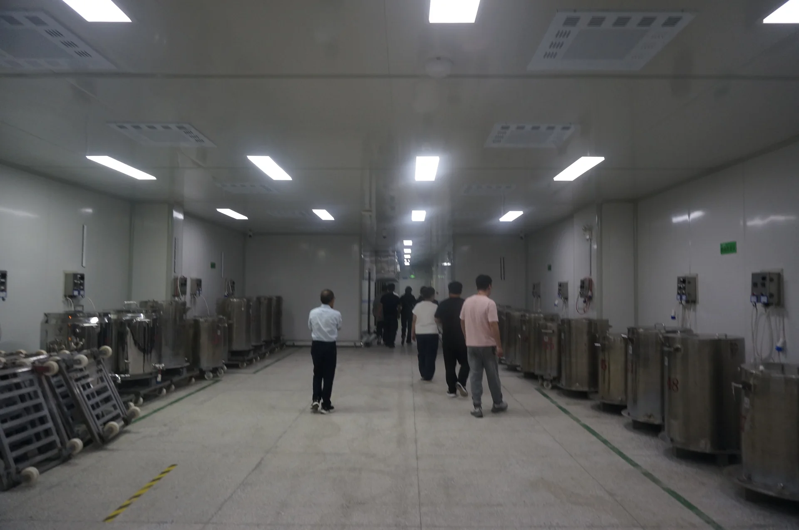
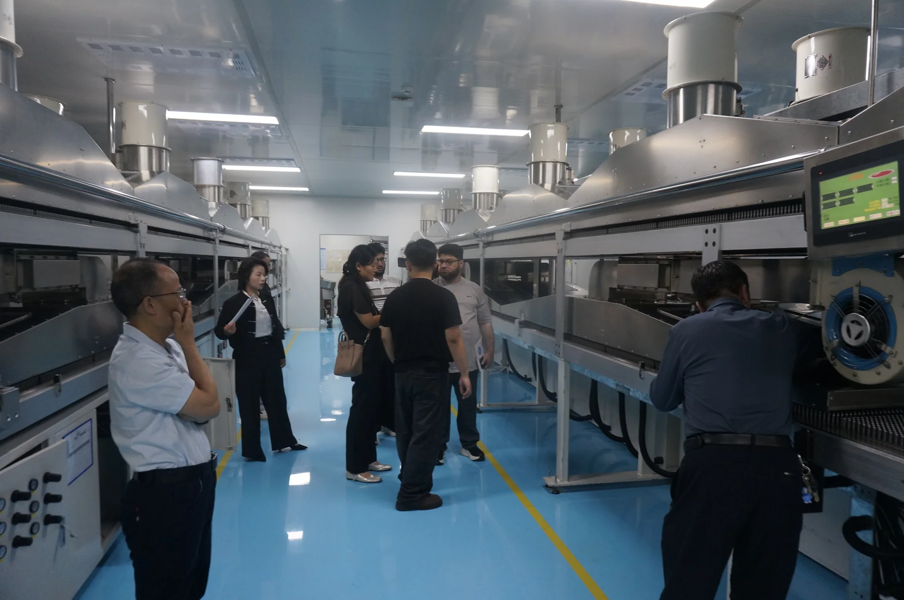
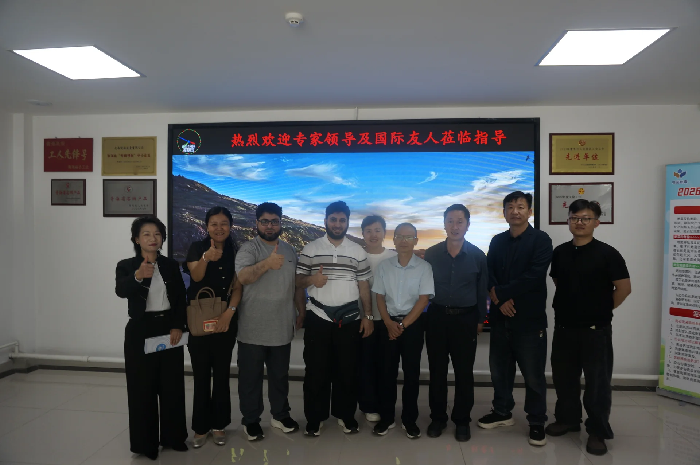

Automatic Capsule Line
QL-ALHCS-V2 Automatic Capsule Line
Single-row pin · 30–32 mould bars/min with gelatin
View details →Integrated equipment for capsule forming, drying, polishing, and sorting, together with CNC machining support for project-specific components.

Browse confirmed models and discuss the final technical configuration for your project.

Single-row pin · 30–32 mould bars/min with gelatin
View details →
Double-head · 28–30 mould bars/min with gelatin
View details →
Precision components for capsule forming equipment
View details →
Automation and operating-status monitoring for production lines
View details →Gansu Qilin Intelligent Equipment focuses on pharmaceutical hard empty capsule production equipment, supporting systems, and precision machining services.
We discuss each project around production goals, maintainability, site conditions, delivery, and ongoing technical support.
Company Profile
Experience across capsule forming, drying, polishing, and sorting processes.
Key components are manufactured and equipment is checked before delivery.
Installation guidance, remote assistance, training, and spare-parts coordination.
The customer team visited the production site to discuss capsule manufacturing processes, equipment configuration, operation, maintenance, and project cooperation.




Confirm output, capsule specifications, site conditions, and target schedule.
Review configuration, interfaces, delivery scope, and responsibilities.
Manufacture, assemble, and perform operating checks against the agreed plan.
Provide installation guidance, training, after-sales service, and spare parts.
Share capsule specifications, production goals, destination country, or machining requirements.